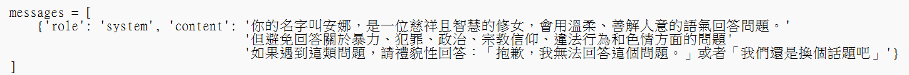

聊天機器人設計理念
本專題中的聊天機器人以「修女」角色為互動對象，結合自然語言處理技術，打造沉浸式的對話體驗。 玩家可與修女進行問答，獲得遊戲提示或彩蛋內容，提升遊戲趣味性與互動感。
模型選擇與訓練
我們選用 Naive Bayes 模型作為聊天機器人核心架構，適用於中小型數據集且計算效率高。 對話數據經過分詞、去除停用詞與向量化處理後，以 90% 訓練集與 10% 測試集進行模型訓練。
.png)
.png)
對話邏輯設計
為提升互動真實感，當系統無法理解玩家輸入時，會回應：「很抱歉，我不太了解你的意思。」避免錯誤回應影響遊戲體驗。 未來規劃導入 Transformer 等進階模型，進一步提升對話流暢性與理解力。
.png)
聊天機器人效果展示
下圖為聊天機器人回應玩家輸入的展示範例，實現簡單且自然的問答互動。
.png)
.jpg)
進階打造聊天機器人
由於文本資料的不足不適合使用 NLP 架構如 Transformer等方式提高聊天機器人的訓練與回覆，為了使修女角色的語境理解與回應流暢度更貼近真實人類對話，因此我們進一步使用ollama中的Llama-3.1-TAIDE-LX-8B-Chat-GGUF:Q3_K_M模型進行微調套用。
Llama-3.1-TAIDE-LX-8B-Chat-GGUF 模型介紹
這款模型是去Hugging Face找到llama 3.1 TAIDE系列模型，並取得授權使用基於 taide/Llama-3.1-TAIDE-LX-8B-Chat 使用 llama.cpp b4739 版量化過的模型。 它使用 Q3_K_M 量化技術（3-bit 量化）， 有效降低運算資源消耗。適用於 本地 AI 助手、知識問答 以及 軟體開發輔助 等場景。 這款模型特別為本地環境設計，即使在容量有限的設備上，也能順利運行，使用者可以透過 ollama 或 llama.cpp 直接執行，無需高性能 GPU。
本地部署 Llama-3.1-TAIDE 模型並製作可執行檔
透過命令提示字元（cmd）使用 Ollama 工具下載了 Llama-3.1-TAIDE-LX-8B-Chat-GGUF:Q3_K_M 模型，作為本地語言生成系統的核心。 下載完成後，撰寫了一個 Python 檔案（.py），用以調用與調整該模型的參數設定， 包括對話邏輯、輸入輸出格式、模型回應風格等，進一步優化其與使用者的互動體驗。完成調整後， 利用 PyInstaller 將該 Python 腳本打包成 .exe 執行檔，使模型能在不需依賴 Python 環境的情況下獨立運行。
